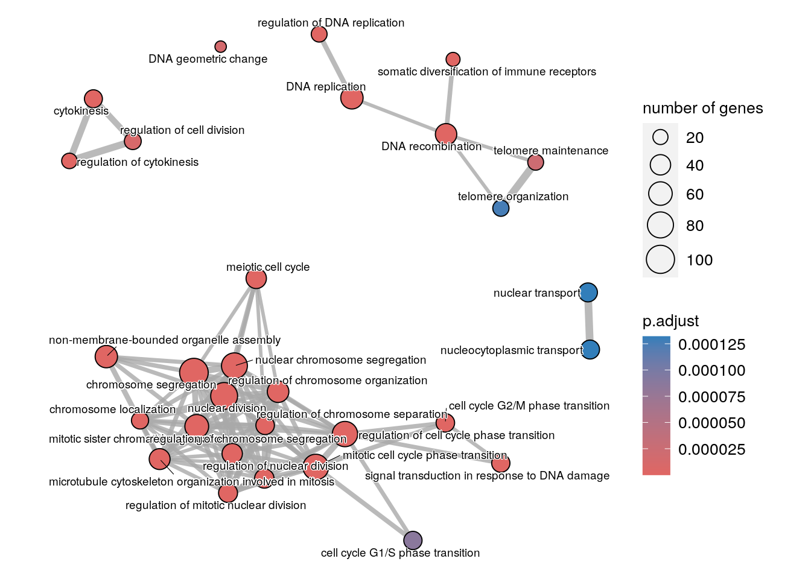

Enrichment analysis
Material
- MSigDB
-
clusterProfilervignette - Revigo
- Signaling Pathway Impact Analysis (SPIA)
- Original paper on GSEA
- STRING for protein-protein interactions
- GO figure! for plotting GO terms and the associated paper
Exercises
Load the following packages:
If the FindMarkers or FindAllMarkers functions were used, we obtained a table listing only the significant genes, but we don’t have any information of fold change for the non-significant genes. Therefore, we can use the over-representation analysis which is a threshold-based method. Using our list of significant genes, we can test if any gene set is over-represented among significant genes or not using a test similar to a Fisher test to compare differences in proportions.
The clusterProfiler package provides functions for over-representation analysis of Gene Ontology gene sets (among other functions, including functions for actual GSEA) or KEGG gene sets.
Genes can be labeled using different types of labels, eg symbol, Ensembl ID, Entrez ID. To list the allowed label types use:
About OrgDb
For other organisms, you can find available OrgDbs at bioconductor
Let’s select a set of genes that are downregulated in the tumor cells compared to normal:
We can do a Gene Ontology term over-representation analysis based on this set of genes. Make sure you check out the help of this function to understand its arguments:
?enrichGOtum_vs_norm_go <- clusterProfiler::enrichGO(tum_down_genes,
"org.Hs.eg.db",
keyType = "SYMBOL",
ont = "BP",
minGSSize = 50)The results are stored in the @result slot:
View(tum_vs_norm_go@result)| ID | Description | GeneRatio | BgRatio | pvalue | p.adjust | qvalue | |
|---|---|---|---|---|---|---|---|
| GO:0007059 | GO:0007059 | chromosome segregation | 105/809 | 424/18870 | 0 | 0 | 0 |
| GO:0098813 | GO:0098813 | nuclear chromosome segregation | 79/809 | 312/18870 | 0 | 0 | 0 |
| GO:0000070 | GO:0000070 | mitotic sister chromatid segregation | 62/809 | 184/18870 | 0 | 0 | 0 |
| GO:0000819 | GO:0000819 | sister chromatid segregation | 67/809 | 225/18870 | 0 | 0 | 0 |
| GO:0140014 | GO:0140014 | mitotic nuclear division | 71/809 | 274/18870 | 0 | 0 | 0 |
| GO:0000280 | GO:0000280 | nuclear division | 88/809 | 441/18870 | 0 | 0 | 0 |
GeneRatio and BgRatio
The columns GeneRatio and BgRatio that are in the enrichResult object represent the numbers that are used as input for the Fisher’s exact test.
The two numbers (M/N) in the GeneRatio column are:
- M: Number of genes of interest (in our case
tum_down_genes) that are in the GO set - N: Number of genes of interest with any GO annoation.
The two numbers (k/n) in the BgRatio column are:
- k: Number of genes in the universe that are in the GO set
- n: Number of genes in the universe with any GO annoation
A low p-value resulting from the Fisher’s exact means that M/N is signficantly greater than k/n.
Some GO terms seem redundant because they contain many of the same genes, which is a characteristic of Gene Ontology gene sets. We can simplify this list by removing redundant gene sets:
enr_go <- clusterProfiler::simplify(tum_vs_norm_go)View(enr_go@result)| ID | Description | GeneRatio | BgRatio | pvalue | p.adjust | qvalue | |
|---|---|---|---|---|---|---|---|
| GO:0007059 | GO:0007059 | chromosome segregation | 105/809 | 424/18870 | 0 | 0 | 0 |
| GO:0098813 | GO:0098813 | nuclear chromosome segregation | 79/809 | 312/18870 | 0 | 0 | 0 |
| GO:0000070 | GO:0000070 | mitotic sister chromatid segregation | 62/809 | 184/18870 | 0 | 0 | 0 |
| GO:0000280 | GO:0000280 | nuclear division | 88/809 | 441/18870 | 0 | 0 | 0 |
| GO:0044772 | GO:0044772 | mitotic cell cycle phase transition | 77/809 | 470/18870 | 0 | 0 | 0 |
| GO:0051983 | GO:0051983 | regulation of chromosome segregation | 40/809 | 131/18870 | 0 | 0 | 0 |
We can quite easily generate a plot called an enrichment map with the enrichplot package:
enrichplot::emapplot(enrichplot::pairwise_termsim(enr_go),
showCategory = 30,
cex.params = list(category_label = 0.5))
Instead of testing for Gene Ontology terms, we can also test for other gene set collections. For example the Hallmark collection from MSigDB:
gmt <- msigdbr::msigdbr(species = "human", category = "H")We can use the function enricher to test for over-representation of any set of genes of the Hallmark collection. We have to include the “universe”, i.e. the full list of background, non significant genes, against which to test for differences in proportions:
When using the genes down-regulated in tumor, among the over-represented Hallmark gene sets, we have HALLMARK_G2M_CHECKPOINT, which includes genes involved in the G2/M checkpoint in the progression through the cell division cycle.
View(tum_vs_norm_enrich@result[tum_vs_norm_enrich@result$p.adjust < 0.05,])| ID | Description | GeneRatio | BgRatio | pvalue | p.adjust | qvalue | |
|---|---|---|---|---|---|---|---|
| HALLMARK_E2F_TARGETS | HALLMARK_E2F_TARGETS | HALLMARK_E2F_TARGETS | 80/344 | 195/3866 | 0.0000000 | 0.0000000 | 0.0000000 |
| HALLMARK_G2M_CHECKPOINT | HALLMARK_G2M_CHECKPOINT | HALLMARK_G2M_CHECKPOINT | 67/344 | 188/3866 | 0.0000000 | 0.0000000 | 0.0000000 |
| HALLMARK_MITOTIC_SPINDLE | HALLMARK_MITOTIC_SPINDLE | HALLMARK_MITOTIC_SPINDLE | 48/344 | 197/3866 | 0.0000000 | 0.0000000 | 0.0000000 |
| HALLMARK_MYC_TARGETS_V1 | HALLMARK_MYC_TARGETS_V1 | HALLMARK_MYC_TARGETS_V1 | 33/344 | 194/3866 | 0.0001564 | 0.0017991 | 0.0016468 |
| HALLMARK_ESTROGEN_RESPONSE_LATE | HALLMARK_ESTROGEN_RESPONSE_LATE | HALLMARK_ESTROGEN_RESPONSE_LATE | 28/344 | 166/3866 | 0.0005747 | 0.0052875 | 0.0048398 |
Clear environment
Clear your environment: